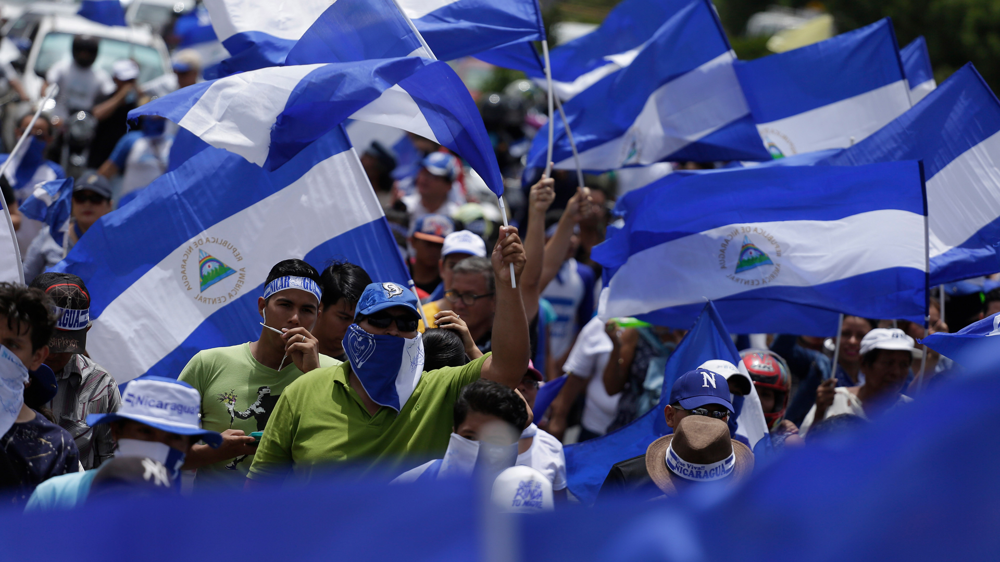
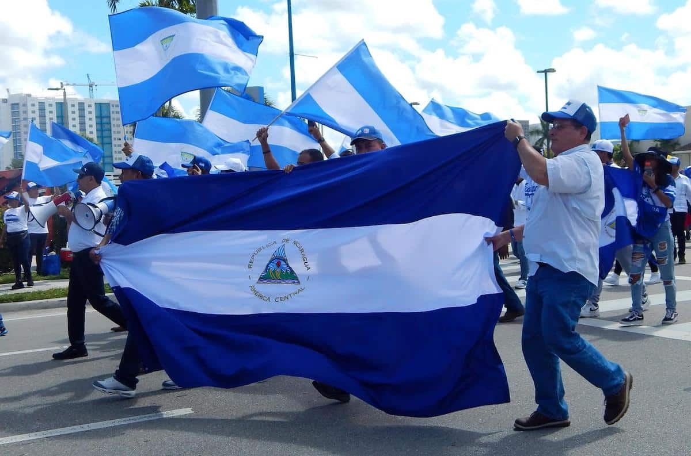

Democracia
Participación en los asuntos públicos y respeto a las instituciones democráticas.
Sobre nosotros
Espacio de organización, participación y liderazgo juvenil de Unamos, integrado por jóvenes de 16 a 35 años.

Presentación
La Juventud Renovadora es el espacio de la juventud de Unamos: un lugar para organizarse, participar y ejercer liderazgo juvenil en Nicaragua.
Juventud Renovadora integra a jóvenes de 16 a 35 años comprometidos con la construcción de una Nicaragua democrática, libre, justa e inclusiva, y promueve una participación política activa, plural y responsable.
El trabajo de la red se orienta a fortalecer nuevos liderazgos, impulsar la formación política y ciudadana, y generar espacios donde las juventudes puedan aportar sus ideas, capacidades y propuestas a los desafíos del país.
Juventud Renovadora es la red juvenil de Unamos, partido político nicaragüense. Su programa trabaja por oportunidades, progreso, solidaridad, democracia y justicia, y soberanía para todas y todos.
En esta página presentamos quiénes somos, qué buscamos, en qué ámbitos trabajamos y dónde consultar la información oficial, sin publicar cargos, fechas ni cifras que no estén confirmados.
Descripción basada en la ficha oficial de Juventud Renovadora publicada por Unamos: unamosnic.org/nuestras-redes (se abre en una pestaña nueva).

Misión
Formar jóvenes en política y ciudadanía, abrir espacios reales de participación y fortalecer nuevos liderazgos que aporten ideas y propuestas a los desafíos de Nicaragua.
Síntesis de los objetivos publicados por Unamos para su red juvenil; no es una declaración estatutaria.
Visión
Una nueva generación nicaragüense que participe, dialogue y actúe con firmeza, asumiendo un papel protagonista en la construcción del presente y el futuro de Nicaragua.
Síntesis editorial basada en la descripción oficial de Juventud Renovadora; pendiente de validación por la organización.
Principios
Los valores que orientan el trabajo de la red, tomados del programa publicado por Unamos.
Participación en los asuntos públicos y respeto a las instituciones democráticas.
Respeto, promoción y defensa de los derechos humanos de todas las personas.
Libertad de expresión, de organización y de participación ciudadana.
Sin discriminación ni marginación; equidad y valoración de la juventud.
Escucha y diálogo entre generaciones y con la sociedad nicaragüense.
Trabajo
Líneas de objetivo en las que se organiza el trabajo de la red.

Impulsar la formación política y ciudadana de las y los jóvenes, con herramientas para participar de manera informada.
Promover una participación política activa, plural y responsable, y generar espacios donde las juventudes aporten.
Fortalecer nuevos liderazgos juveniles capaces de representar a sus comunidades y de impulsar cambios.
Abrir espacios de diálogo para debatir ideas, capacidades y propuestas ante los desafíos del país.
Son líneas de objetivo; las actividades concretas se anuncian en la sección Actividades. Las fotografías de esta página son ilustrativas de contextos nicaragüenses y no corresponden a actividades organizadas por Juventud Renovadora.
Trayectoria
Referencias documentadas en el sitio oficial de Unamos.
Artículo de opinión de Luis A. Blandón, Enlace Nacional de la Juventud Renovadora, sobre el papel de la juventud en la vida pública del país.
Ver en unamosnic.org (se abre en una pestaña nueva)Elección de convencionales para la IX Convención Nacional, mediante proposiciones abiertas y voto directo y secreto.
Ver en unamosnic.org (se abre en una pestaña nueva)Presentación vigente de Juventud Renovadora, con su descripción y canales oficiales.
Ver en unamosnic.org (se abre en una pestaña nueva)Cronología breve basada en publicaciones verificables; se irá ampliando con los hitos que la organización confirme.
Preguntas frecuentes
Respuestas breves basadas en la información oficial publicada por Unamos.
Es el espacio de organización, participación y liderazgo juvenil de Unamos: una red que integra a jóvenes de 16 a 35 años comprometidos con la construcción de una Nicaragua democrática, libre, justa e inclusiva.
Según la descripción oficial, la red está integrada por jóvenes de 16 a 35 años. Las convocatorias de incorporación se anuncian en los canales oficiales de Juventud Renovadora y en la web de Unamos.
No. Juventud Renovadora es la red juvenil de Unamos, el partido político nicaragüense al que pertenece. La historia, el liderazgo y las propuestas del partido se publican en su sitio oficial.
Sigue los canales oficiales de Juventud Renovadora, donde se publican las convocatorias, y consulta la agenda en la sección Actividades de esta web. También puedes escribirnos desde la página de contacto.
En unamosnic.org/nuestras-redes (se abre en una pestaña nueva) está la presentación de Juventud Renovadora; en ¿Qué hacemos? (se abre en una pestaña nueva) el programa de Unamos, y en la biblioteca virtual (se abre en una pestaña nueva) sus documentos y boletines.
Contacto
Escríbenos a través del formulario de contacto o sigue los canales oficiales de Juventud Renovadora.